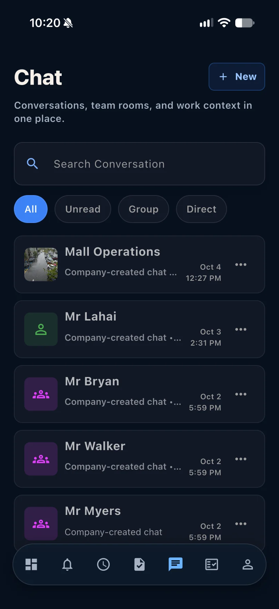

Operations at a glance
Move from recorded activity and proof coverage to analytics and performance without losing company context.
Bring company communication, schedules, assignments, proof, recorded activity, and daily decisions into one role-aware workspace.

Each view is organized around a real operational decision, from today’s priorities to the conversation and proof behind the work.
Move from recorded activity and proof coverage to analytics and performance without losing company context.

Keep team rooms, direct conversations, and operational updates in the same workspace.
Give every person a direct view of working hours, shift guidance, and scheduled activity.
Keep assignments, before-and-after evidence, and completion activity together.
Employers, managers, supervisors, leads, and employees see the right tools.
Dedicated workflows keep workplace concerns and urgent activity visible.